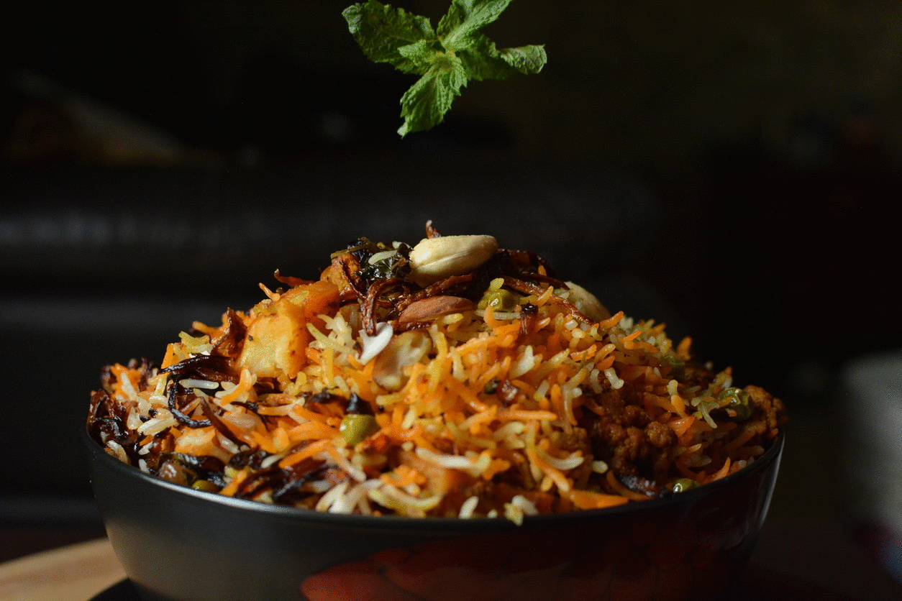

Biryani forever and always

This is a delicious Indian rice dish which is
often reserved for very special occasions such as weddings,
parties, or holidays such as Ramadan. It has a lengthy
preparation, but the work is definitely worth it. For
biryani, always use long grain rice. Basmati rice with its
thin, fine grains is the ideal variety to use. Ghee is butter
that has been slowly melted so that the milk solids and golden
liquid have been separated and can be used in place of vegetable
oil to yield a more authentic taste.
Ingredients for Chicken Biryani Recipe
- Boneless chicken
- Basmati rice 1 1/2 cups
- Oil 3 tablespoons
- Cinnamon 1 inch stick
- Bay leaves 2
- Cloves 5-6
- Cumin seeds 1 tablespoon
- Green cardamons 3-4
- Onions sliced 2 medium
- Green chillies slit 3
- Turmeric powder 1/4 teaspoon
- Tamatoes chopped 2 medium
- Salt
- Ginger paste 3/4 teaspoon
- Red chillies powder 1/2 teaspoon
- Thick yogurt 1 cup
- Onions sliced and fried 2 medium
- Garam Masala powder 1/2 teaspoon
- Ginger cut into thin strips 1 inch pieces
- Fresh mint leaves torn a few
- fresh coriander leaves torn a few
- Mlik 1/2 cup
- Rose water a few drops
- Eggs boiled and sliced 4